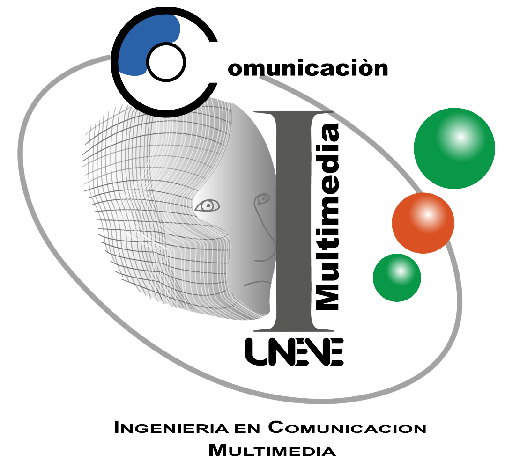
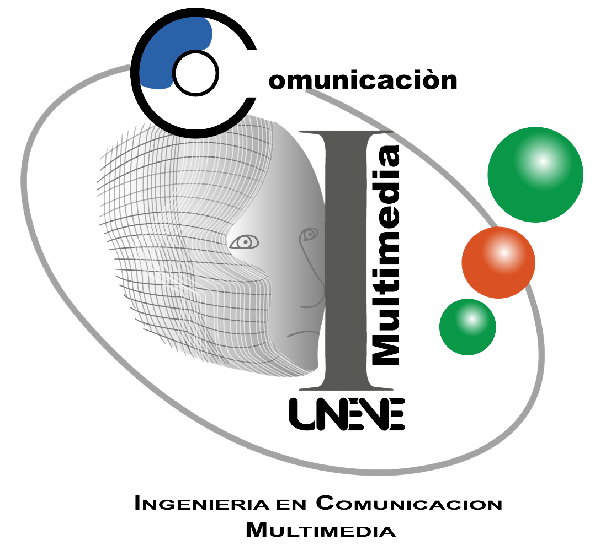

LOCALIZADOR DE RECURSOS UNIFORME
Según la Real Academia Española (RAE), URL es una sigla de "Uniform Resource Locator", que en español se traduce como "Localizador Uniforme de Recursos". Aunque no tiene una definición oficial en el Diccionario de la lengua española (DLE) como término técnico, la RAE lo describe en su Diccionario de términos de internet como:
URL: Dirección de un recurso disponible en una red informática que permite su localización y acceso.
En términos generales, un URL es la dirección única que identifica un recurso específico en la web, como una página, un archivo o una imagen, y proporciona la información necesaria para acceder a él mediante un navegador o una aplicación.
Estructura
Componentes de un URL
Protocolo (Scheme):
Indica el método para acceder al recurso. Los protocolos más comunes son:
- http: Protocolo de transferencia de hipertexto.
- https: Versión segura de HTTP.
- Otros: ftp (transferencia de archivos), mailto (correo electrónico).
Ejemplo:
https://

Usuario:Contraseña (Opcional):
Credenciales para acceder a recursos protegidos. Se utiliza en casos específicos, como en servidores FTP.
Ejemplo:
usuario:contraseña@

Dominio o Dirección IP:
Identifica el servidor que aloja el recurso. Puede ser un nombre de dominio (www.ejemplo.com) o una dirección IP (192.168.1.1).
Ejemplo:
www.ejemplo.com

Puerto (Opcional):
Especifica el puerto del servidor al que se debe conectar. Por defecto:
- Puerto 80 para HTTP.
- Puerto 443 para HTTPS.
Se incluye cuando se usa un puerto diferente al predeterminado.
Ejemplo:
:8080
Ruta:
Es la ubicación específica del recurso dentro del servidor. Representa carpetas y archivos.
Ejemplo:
/carpeta/archivo.htm

Parámetros de Consulta (Query String):
Información adicional que se pasa al servidor. Se escriben como pares clave-valor separados por & y precedidos por ?.
Ejemplo:
?id=123&nombre=juan
Fragmento (Fragment):
Identifica una sección específica dentro del recurso, como un encabezado o un párrafo. Se precede con #.
Ejemplo:
#seccion2
Fragmento (Fragment):
Identifica una sección específica dentro del recurso, como un encabezado o un párrafo. Se precede con #.
Ejemplo:
#seccion2
Ejemplo: